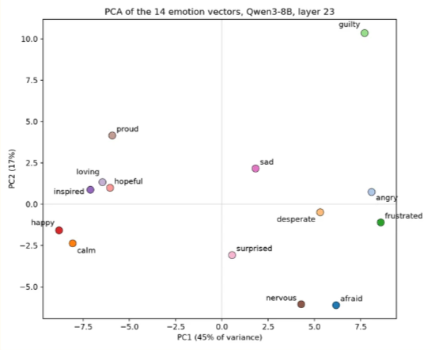

Case study, interpretability
How Qwen3-8B arranges its emotions
This is Jiahe's part of our team project. I presented it for him in our Q1 talk and wrote it up here, but the analysis and the figures are his.
TL;DR
- In Qwen3-8B's emotion vectors, the biggest split is good versus bad. Positive emotions point one way and negative ones point roughly the opposite way (cosine about −0.65).
- Related emotions cluster. Happy, inspired and hopeful sit at about +0.6 with each other, and afraid and nervous are a tight pair at +0.64.
- The arrangement shows up early and stays put. Layer 23's geometry correlates 0.94 or higher with every layer from 6 to 35.
The question
The Anthropic paper our team replicated (Sofroniew et al., 2026) found that Claude has internal directions for emotions. Jiahe's question was whether the same structure appears in Qwen3-8B, an open model: which emotions sit close together inside the model, and which point away from each other.
The vectors
The team built one vector per emotion from 1,120 short stories that Qwen wrote, covering 14 emotions. For each emotion, the model's activations on stories about that emotion were averaged, and then the average across all 14 emotions was subtracted. That leaves what is specific to each emotion. Each vector is 4,096 numbers long.
Jiahe worked with the vectors at layer 23 of 36, about two-thirds of the way through the model and the same layer the rest of the team uses, and then checked whether the picture changes at other layers.
Cosine similarity
To compare two vectors, Jiahe used cosine similarity. It only looks at which way two vectors point and ignores how long they are. It runs from +1 when they point the same way, through 0 when they're unrelated, to −1 when they point in opposite directions.
The heatmap below shows it for every pair of the 14 emotions. The same emotions run down the side and along the bottom, red squares are pairs that point together, blue squares are pairs that point apart, and the diagonal is 1 because every emotion matches itself.

Happy, inspired and hopeful point together at about +0.6. Afraid and nervous are a tight pair at +0.64, and angry, frustrated and desperate cluster too. The blue areas are where the positive and negative groups point in opposing directions, at about −0.65. The model was never told how emotions relate, yet it groups them roughly the way people do.
PCA
A 14 by 14 grid is a lot to read at once, so Jiahe also used PCA (principal component analysis). PCA finds the directions along which the 14 vectors are most spread out and plots each emotion by where it sits along the top two. That squeezes 4,096 dimensions down to 2 while keeping as much of the variation as it can.

The horizontal axis, PC1, explains 45% of the variance and separates positive emotions on the left from negative ones on the right. So the biggest difference in this emotion space is good versus bad. The vertical axis, PC2, explains another 17%, with guilty and proud at the top and nervous and afraid at the bottom. Jiahe doesn't have a clean meaning for PC2 yet. Together the two axes keep 62% of the spread, so the flat picture leaves some of it out.
The two views agree. Emotions that land close together in the PCA were similar in the heatmap.
Does it hold across layers?
Layer 23 was a choice, so Jiahe compared the geometry at every layer. The arrangement at layer 23 correlates 0.94 or higher with the arrangement at every layer from 6 to 35, so the structure forms early and stays stable. His slides don't spell out exactly how that comparison was computed, so I can't say more about the method here.
As for how useful the vectors are, on held-out stories about topics the vectors never saw, picking the emotion whose vector a story points along most is right 26% of the time, against 7% by chance. That's a real signal, but not a strong classifier on its own.
Limits
- This is Qwen3-8B, not Claude, so the numbers won't match the paper's.
- The paper's neutral-text correction, which removes directions that vary in emotionally neutral text, isn't implemented yet.
- The story labels weren't checked by a person.
My own part of the project, steering the model along these vectors, is written up here. The slides from our Q1 talk are here, and the code is in the team repo.
References
- Sofroniew et al. (2026). Emotion Concepts and their Function in a Large Language Model. Anthropic. arXiv:2604.07729